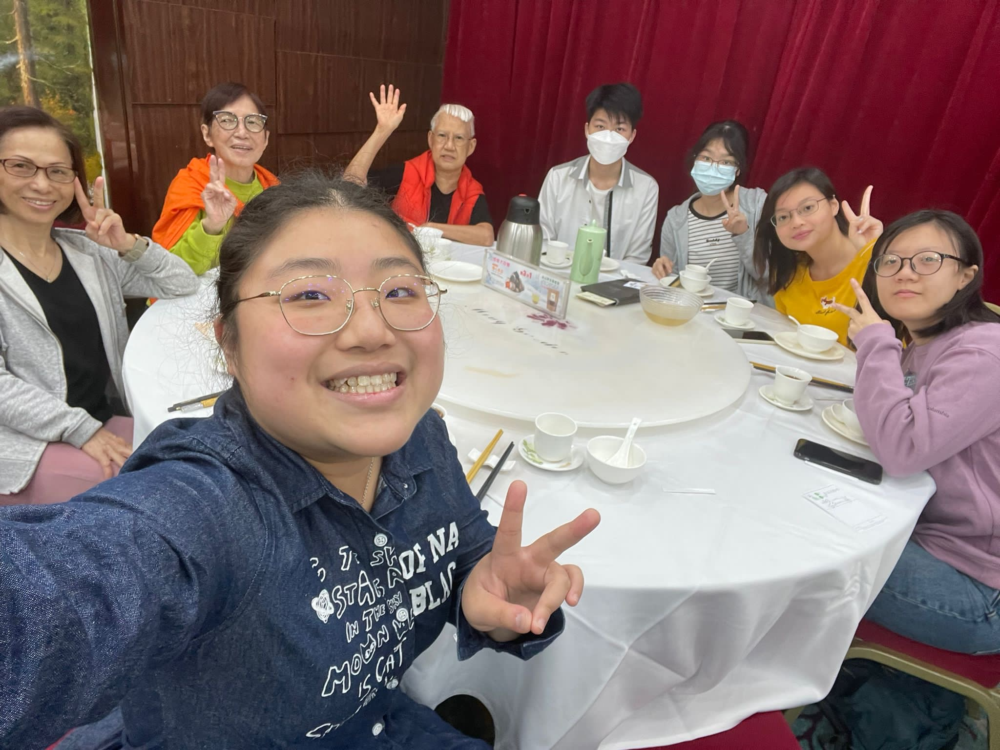
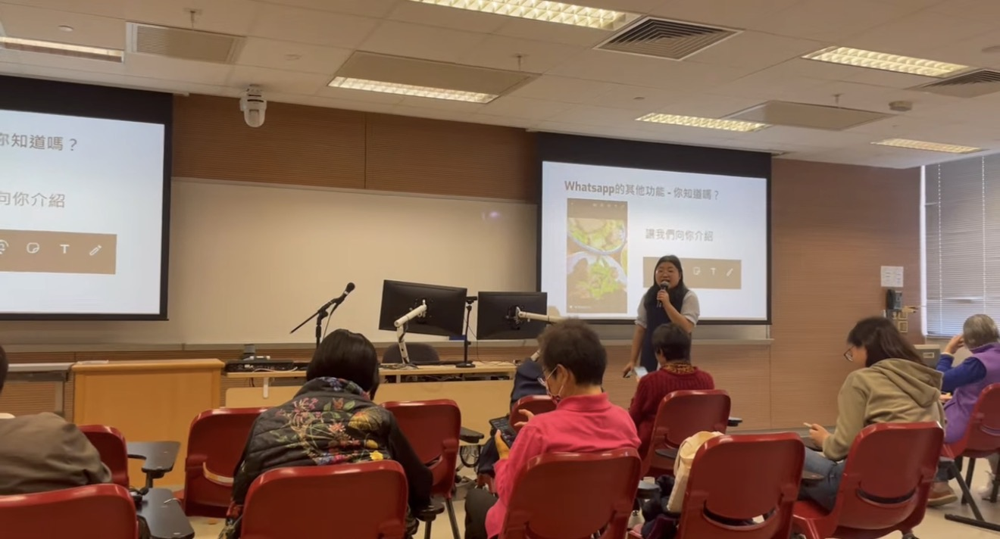
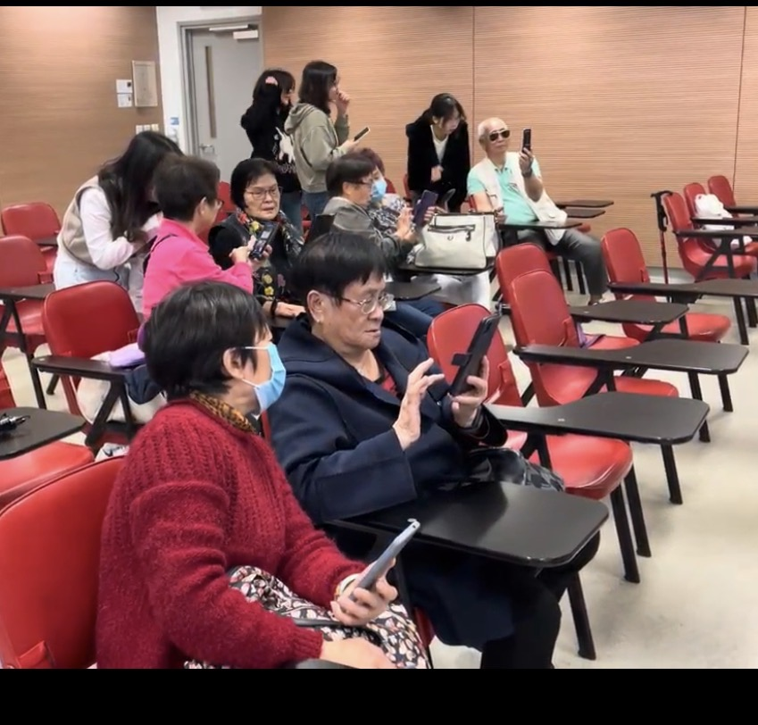

Dreamer Lab Award (HKBU) — Event General Coordinator
Community Events · Digital Literacy
Sep 2023 – Aug 2024
Event Planning
Digital Literacy
Elderly Care
Overview
Dreamer Lab is an HKBU community service programme connecting students with elderly residents in Hong Kong. As Event General Coordinator, I organized a series of digital literacy workshops to help elderly participants navigate everyday digital tools.
What I Did
- Organized nearly seven community events for approximately 20 elderly participants.
- Designed and delivered digital literacy workshops covering social media, hospital apps, and photography.
- Coordinated meetings and outdoor activities, ensuring smooth logistics and participant safety.
- Built bridges between student volunteers and elderly participants, encouraging intergenerational exchange.
Outcome
Elderly participants gained practical digital skills and confidence using smartphones and apps. I strengthened my project management and intergenerational communication skills, and learned how to design workshops for non-technical audiences.
Photos


